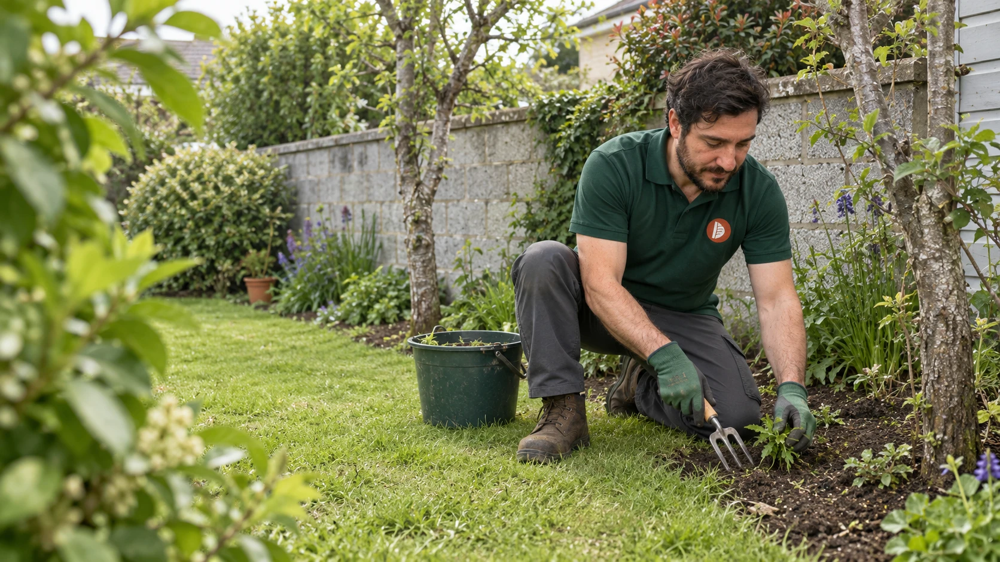
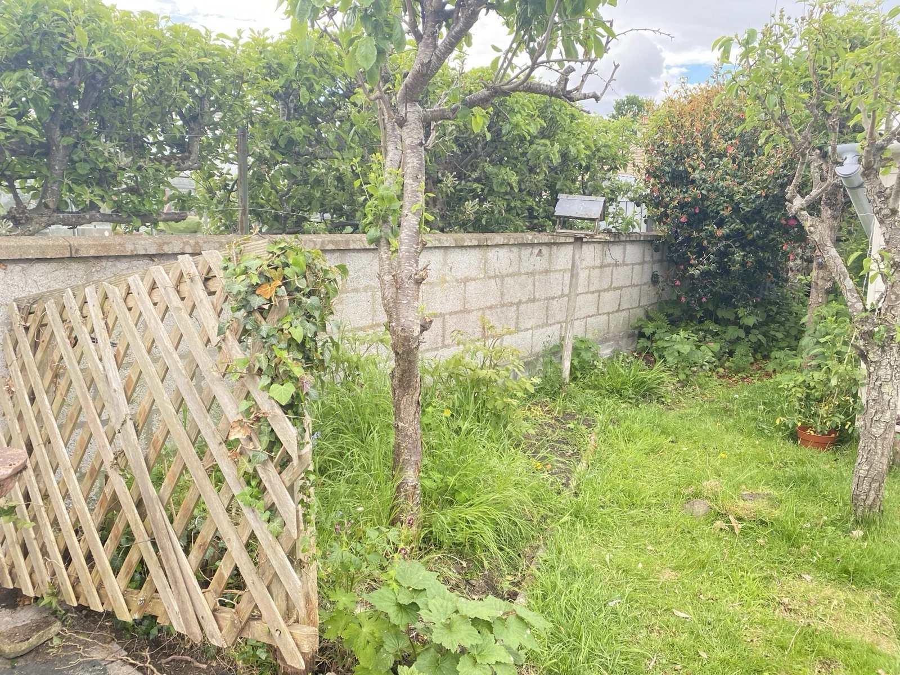
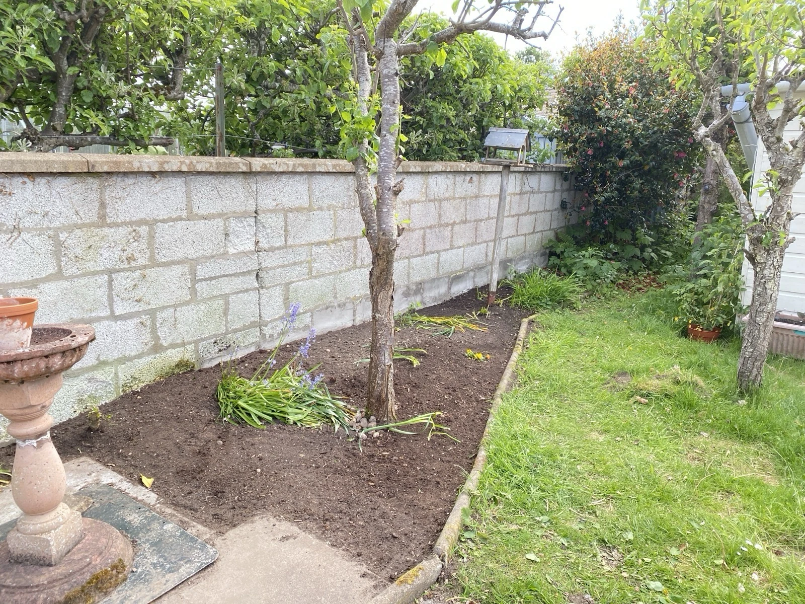
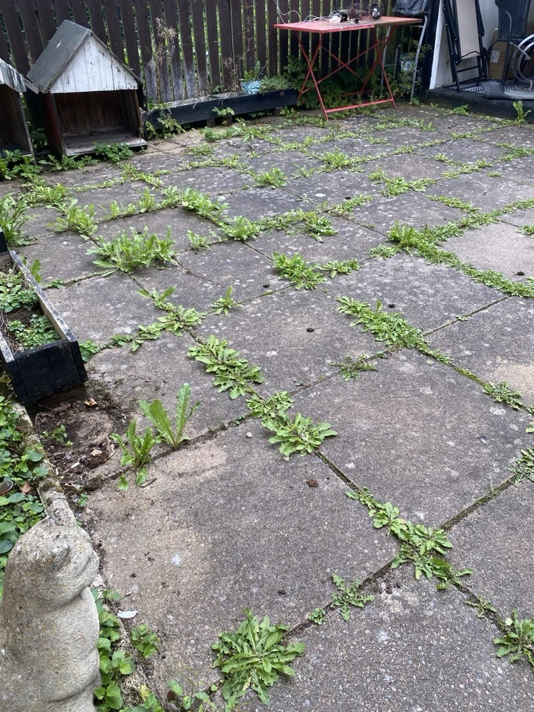
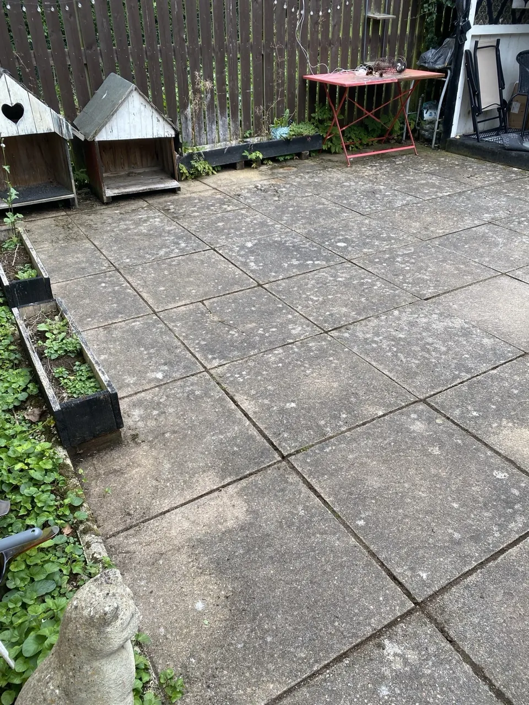
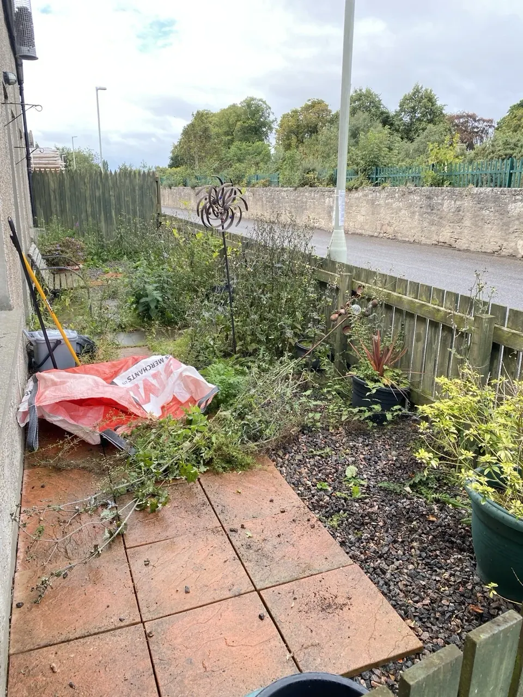
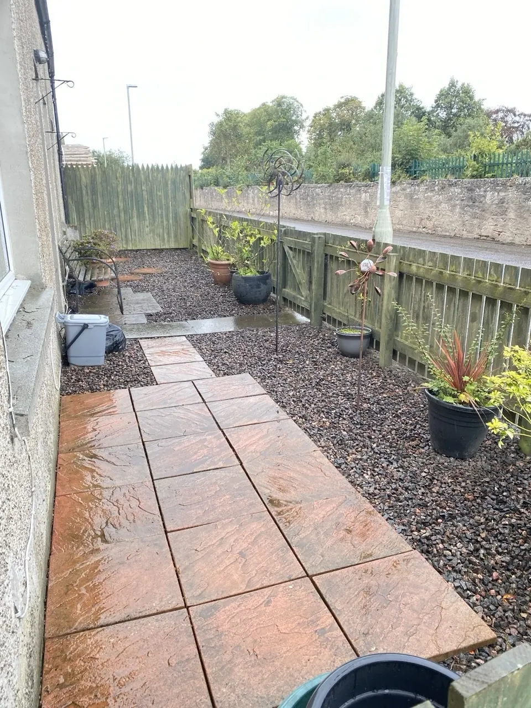

Garden beds
& borders
Removing unwanted growth around your plants and giving your borders space to breathe.
THE GROWING SPACESGRANTOWN-ON-SPEY, SCOTLAND
A little less overgrown.
A lot more yours to enjoy.
Personal weeding & garden tidy-ups with Dan.
Tell me about your garden
From the spaces between paving stones to the edges of your flower beds, I take care of the unwanted growth that makes a garden feel overgrown.
Removing unwanted growth around your plants and giving your borders space to breathe.
THE GROWING SPACESWeeding gravel, paving joints and garden paths, so you can see the space beneath again.
THE WAY THROUGHTidying the strips, corners and edges where unwanted growth quietly takes hold.
THE FINISHING TOUCHESHands-on care. No chemical weedkillers.A straightforward approach to looking after your garden.
Everyday spaces, with a bit of care.
These are photographs from my own work.
Garden beds & borders




Paving & patios


Gravel areas & paths
03 / MEET DAN
Hello, I’m Dan. I look after gardens in Grantown-on-Spey, specialising in weeding and garden tidy-ups.
I focus on the practical jobs: clearing unwanted growth from beds, paths and edges to leave a tidier, more usable space. You can contact me directly to talk about what your garden needs.
Have a garden in mind?04 / GOOD TO KNOW
I’m based in Grantown-on-Spey. Include your location when you get in touch and I can let you know whether I can help.
No. My weeding and garden tidy-up work is carried out without chemical weedkillers.
Get in touch with your location and a short description of the work. A few current garden photos will help us discuss what needs doing.
You can email or call me. Please leave a message if I don’t answer — I don’t use my mobile while working.
05 / LET’S TALK GARDENS
Tell me where you are and what needs a tidy.
We’ll take it from there.